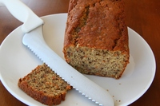

Submitted by: Josh <jmandel@snarked.com>
Date: 2010-10-12
Click photo to enlarge
|  |
Ingredients:
1 c sugar
4 Tbsp butter
4 Tbsp olive oil
2 eggs
2-3 bananas, mashed OR 1 banana + 2 grated carrots
1/4 c low-fat plain yogurt
1 tsp vanilla extract
1 1/2 c whole wheat flour
1 tsp baking soda
1/4 tsp baking powder
1/4 tsp salt
1/2 c chocolate chips and/or nuts
Instructions
Cream butter + oil and sugar. Add eggs, then bananas and/or carrots. Stir in yogurt and vanilla.
In another bowl, soft together flour, baking soda, baking powder, salt, and chips/nuts. Mix dry ingredients with wet until just combined.
Pour into a greased loaf pan and cook for 75 minutes at 350 degrees F.